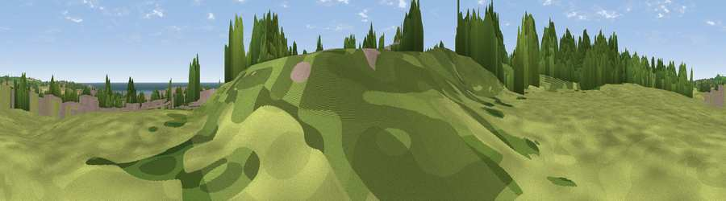

Namey Hill
#28071 in England · top 58% of its area beats it · near CleadonThe view, rendered

A 360° render of this exact spot computed from the terrain model, tree cover and land cover — summer colours, afternoon light, calibrated against photographs of famous viewpoints. Real trees, hedges and buildings will differ in detail.
The panorama
Grey silhouette: terrain skyline in each direction (720 bearings, Earth curvature and refraction included). Dashed green: skyline with trees (+15 m) and buildings (+8 m) as obstacles. Blue strip: how far the ground is visible on each bearing.
Where the view opens
Wedge length = distance to the farthest visible ground on that bearing (vegetation-aware). Rings at 10, 25 and 50 km.
What fills the view
45% grassland · 24% woodland · 12% water · 10% cropland · 10% built-up
Angular shares of the visible panorama (visual magnitude), not map area. Landscape diversity 0.61 (0–1 Shannon).
Key numbers
More beautiful places nearby
The staircase of upgrades: each row has a higher view potential than everything closer. Driving times are estimates from straight-line distance, calibrated against real road routing — check an actual route before setting out.
| Place | Direction | Drive | Score |
|---|---|---|---|
| Viewpoint near West Boldon | WSW · 3 km | ~8 min | 47.1 |
| Boldon Hills | W · 4 km | ~9 min | 66.9 |
| Viewpoint near Whitburn | N · 5 km | ~11 min | 67.3 |
| Tunstall Hills | S · 5 km | ~12 min | 74.2 |
| Penshaw Hill | SW · 8 km | ~16 min | 75.1 |
| Viewpoint near Houghton-le-Spring | S · 9 km | ~18 min | 76.0 |
| Viewpoint near Sunniside | W · 17 km | ~30 min | 77.6 |
| Pontop Pike | WSW · 25 km | ~40 min | 77.8 |
54.93085, -1.39300 · source: osm peak · position refined by local search. Computed location — check access rights before visiting.